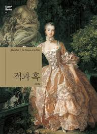

적과 흑가니!!!!흑간희!!!~~~

목록
작가 소개 - 스탕달
본명은 마리 아리 벨로 1783년 프랑스 그르노블에서 테어났다.
유복한 어린 시절을 보냈고 육군성 경리부 임시 보좌관, 참사원 심의관, 왕실 기구 및 건물 감사관 등의 직책을 맡으며 화려한 사교 생활을 누렸지만, 언제나 희곡 작가를 꿈꾸었다.
이탈리아 밀라노에 머물면서 [이탈리아 마술사][1817년의 로마, 나폴리, 피렌체]를 발표하며 작가로서 첫발을 내디뎠고 1830년 [적과 흑]을 발표함으로써 낭만주의 문학이 만개하던 프랑스에 사실주의 문학의 새로운 장을 열었다.
1831년에 로마 근교의 교황령 치비타베키아 영사로 임명되었고, 1842년 58세의 나이에 뇌졸중으로 세상을 떠났다.
작품으로는 [연애론][라신과 셰익스피어][로시니의 생애][아르망스][로마 산책][파르마의 수도원]등이 있다.
줄거리
나폴레옹이 몰락한 후 군인으로 성공하기 힘든 시대에 여전히 나폴레옹을 숭배하며 살아가는 하층 계급 쳥넌 쥘리엥 소렐.
드 레날 씨의 집에서 가정교사로 일하던 쥘리엥은 부르주아에 대한 증오심 때문에 충동적으로 드 레날 부인을 유혹했다가, 나중에는 진심으로 그녀를 사랑하게 된다.
하지만 그 스캔들로 쥘리엥은 드 레날 씨의 집을 떠나고 브장송의 신학교에 들어간다. 신학교에서 인정을 받은 쥘리엥은 추천을 통해 파리 대귀족 드 라 몰 후작의 비서가 된다.
그는 드 라 몰 후작의 거만한 딸 마틸드를 임신시키고, 후작은 어쩔 수 없이 두 사람의 결혼을 허락한다. 이리하여 쥘리엥은 권력과 고위직 획득이라는 목절을 동시에 달성할 수 있다는 희망에 부푼다.
그러나 드 레날 부인이 쥘리엥의 꿈은 물거품이 되고, 격분한 쥘리엥은 성당으로 드 레날 부인을 찾아간다.
후기
적과 흑 2020-07-16
지은 이 : 스탕달
옮긴 이 : 장민희
얼마 전 유튜브에서 한 자기개발 영상을 본 이후 무작정 꺼내 든 책이었다.
삼성출판사에서 청소년을 겨냥해 만든 책 시리즈였는데 첫장에서 작가의 일생, 가치관들을 한번 훑어준 것이 책을 읽고 이해하는데 많은 도움이 되었다.
책의 작가인 스탕달(필명)은 프랑스 동남부의 주요도시 그르노블에서 가톨릭 교도이자 열렬한 왕당파였던 아버지와 보수적이고 엄격한 예수회 신부였던 가정교사 사이에서 그들의 보수적인 사상과 권위적인 태도에 반항심을 느꼈고 계몽주의적이고 자유주의적인 지식이었던 외조부의 영향을 크게 받아 자유주의적이고 진보적인 성향을 갖게 되었다고 한다. 나폴레옹과 같은 시대에 살면서 나폴레옹과 함께 전쟁에 참전하기도 했던 그는 나폴레옹이 유배되고
왕정이 복고되면서 이탈리아 정부에 의해 추방되어 파리로 돌아온 이후 소설을 쓰기 시작했다.
스탕달이 쓴 나폴레옹에 관한 책에서 그는 나폴레옹에 대한 예찬, 독재자가 된 나폴레옹에 대한 비난, 정치적 몰락 이후에 그에 대한 옹호 등을 담았는데 작가의 나폴레옹에 대한 이런 생각을 적과 흑의 주인공 쥘리엥의 나폴레옹에 대한 태도에서 엿볼 수 있다. 스탕달은 적과 흑을 쓰기 이전에 자신의 생각, 사람들의 생각을 알기 위해서 이에 대한 책을 여러 권 썼는데
적과 흑이 인물들의 심리 묘사가 굉장히 자세히 나와 있는 것을 보면 스탕달이 사람들의 생각에 대해 알기 위해 얼마
나 고민했는지를 알 수 있던 것 같다.
사실 책을 읽으면서도 중간중간 이해가 되지 않는 부분들이 많았다. 책 중간중간에 그 시대에 실제로 살았던 사람들을 넣는다거나 신화에 나오는 인물들이 나온 이유도 있었겠지만 이 책을 이해하기 가장 어려웠던 이유는
시대와 문화적 차이가 지금과 많이 다르기 때문이라고 생각한다. 나폴레옹의 몰락 이후 왕정시대로 돌아간 프랑스가 이 소설의 배경이기 때문에 배경적 지식이 전혀 없던 나로썬 스탕달과 주변 인물들의 행동들을 이해하기 어려웠다.
그래서인지 책의 후반부로 갈수록 책에 대한 흥미가 떨어지고 그저 그런 사랑이야기, 권력층의 이야기로밖에 보이지 않았지만 그럼에도 내가 이 책을 끝까지 읽을 수 있었던 까닭은 하루 일과를 마치고 책을 필때면
마치 작가가 살던 그 때 그 시절로 시간여행을 하는 것 같은 느낌을 받았기 때문일 것이다. 한 글자 한 글자 곱씹으며 머릿속에 그려낸 적과 흑은 나에게 책을 읽는다는 행위 자체의 즐거움을 깨닫기에 충분했다. 또한 적과 흑에 그려진
인물들의 자세한 심리 묘사는 내가 책속의 주인공이 되고 실제로 주변인물들과 대화하고 있다는 느낌마저 들게 하였다. 거의 2-3년만에 꺼내 든 책이 스탕달의 "적과 흑" 이라는 것에 정말 감사함을 느낀다.
또한 지금은 책을 읽는 자세도 미숙하고 책을 잘 이해하지도 못하기 때문에 감사함과 동시에 아쉬움과 작가에 대한 미안함도 느끼고 있다. 이후에 꼭 몇 번이고 다시 읽고 싶은 책이었다.
목록